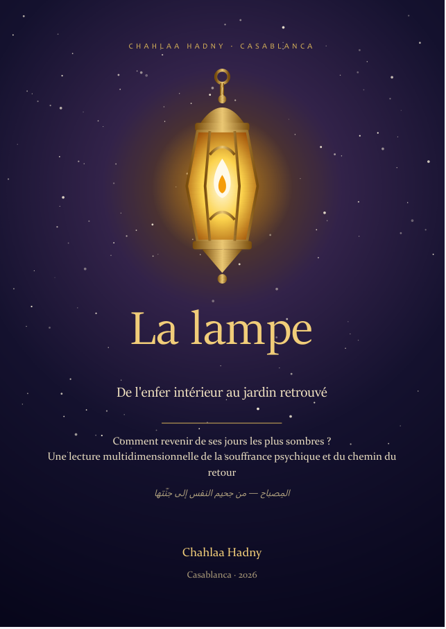
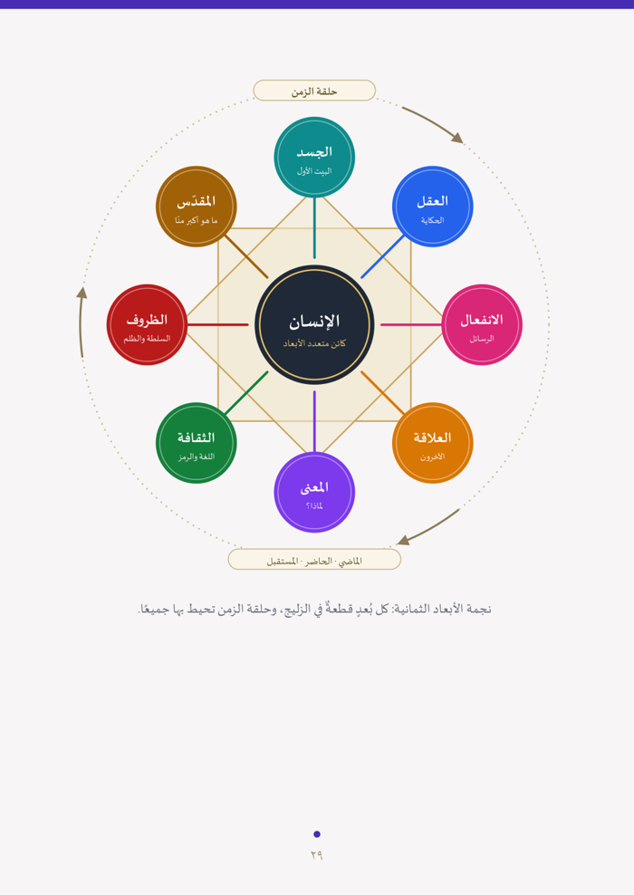
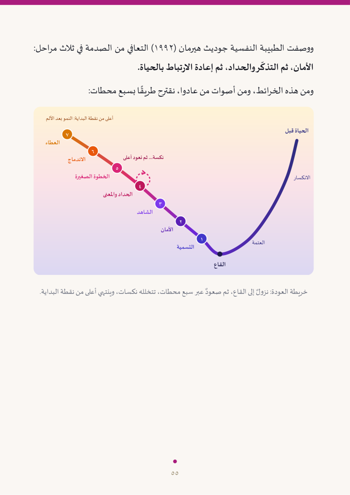
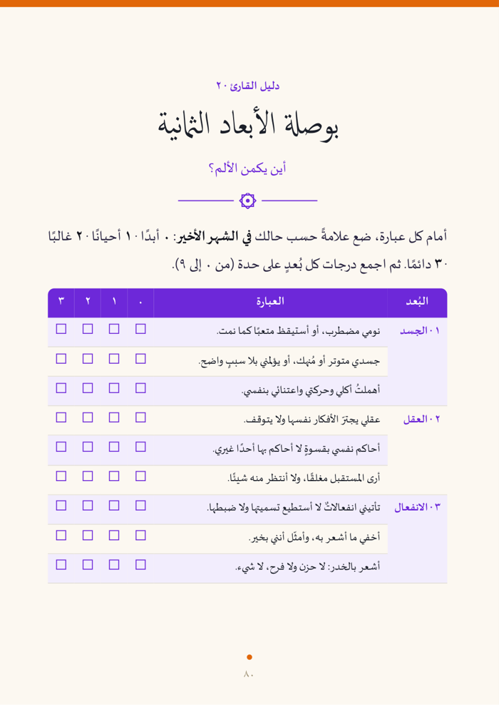

Qu'est-ce qui te pèse aujourd'hui ?
Choisis ce qui te parle. Tu reçois un premier exercice à faire tout de suite, et le booklet adapté t'est offert avec ta consultation.
Sept chemins vers une vie meilleure
Guidance intuitive
Des repères clairs quand tu ne sais plus quelle direction prendre.
Guérison
Apaiser les blessures psychologiques et écouter les messages du corps.
Connexion à l'univers
Retrouver du sens, de l'alignement et la confiance dans la vie.
Mission & vrai soi
Découvrir qui tu es vraiment et pourquoi tu es là.
Nouvelle identité
Renforcer tes traits, dépasser tes blocages et devenir la personne que tu choisis d'être.
Hypnose & auto-hypnose
Des séances guidées pour reprogrammer tes pensées et te détendre en profondeur.
Lecture des rêves
Comprendre ce que ton inconscient te dit chaque nuit.

La lampe المِصباح
De l'enfer intérieur au jardin retrouvé · par Chahlaa Hadny
Beaucoup de nos symptômes ont commencé comme des solutions intelligentes à de vrais problèmes, avant de perdre leur souplesse et de devenir des prisons. Ce livre décrit la souffrance de l'intérieur, et c'est de là que part le chemin du retour.
- 1 · L'enferLa carte de l'obscurité : ce que l'on vit quand les lumières s'éteignent.
- 2 · L'humain dans toutes ses dimensionsCorps, pensée, émotion, lien, sens, culture, conditions de vie, sacré.
- 3 · Le cheminSept étapes : nommer, sécuriser, être vu, faire le deuil, le petit pas, l'intégration, le don.
- 4 · Le jardin possibleLes cinq capacités retrouvées et une charte en douze points.
- + Guide du lecteurLa boussole des huit dimensions, les cinq feux et un plan de 30 jours.



Un booklet pour chaque problème
Courts, pratiques, à suivre sur quelques jours. Chaque booklet est offert avec ta consultation.
La nuit parle, le souffle apaise
Journal des rêves
Exemple- Symboles
- Une eau calme, une porte bleue, une voix connue
- Émotion
- Paix, puis hésitation
- Quelle porte hésites-tu à ouvrir dans ta vie ?
- À qui appartient cette voix, et que te dit-elle ?
Auto-hypnose : 1 minute de souffle
Inspire 4 secondes, expire 6 secondes. Suis le cercle.
Chahlaa Hadny شهلاء حاضني
Dix ans infirmière au chevet des patients, des années d'études en psychologie, et une expérience personnelle de l'obscurité. Aujourd'hui, j'accompagne chaque personne à retrouver son vrai soi, avec mon intuition et ma propre méthode.
Réserve ta consultation avec moi
En visio, partout dans le monde. Chaque consultation inclut le booklet adapté à ton besoin et un suivi par écrit.